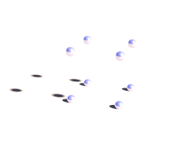

This part describes the mechsim.inc include file that comes with MegaPOV and contains various macros simplifying the use of the mechanics simulation features.
The mechsim.inc include file contains several macros so simplify the generation of simulation topologies as well as macros building POV-Ray™ objects representing the simulation data.
At the beginning of the file there are various declarations of textures and other things that are used by the macros. In most cases you can override the default values by declaring the identifiers differently before including the file.
The version number of the mechsim.inc include file.
A dummy transform that can be used in the topology generation macros (see Section 3.4.5, “The topology generation macros”) if no transform is supposed to be used.
A dummy fixation function for topology generation macros (see Section 3.4.5, “The topology generation macros”) that does not fix any masses.
A dummy attach function for topology generation macros (see Section 3.4.5, “The topology generation macros”) that does not attach any masses.
A dummy force function for topology generation macros (see Section 3.4.5, “The topology generation macros”) that does not apply custom forces to any masses.
The number of decimal places to be written to files for coordinates. Default value is 12.
If true reflection is turned off for the textures in this include file. Default value is false.
Texture to be used for texturing the nodes (masses) of the simulation topology. A grey metallic texture by default.
Texture to be used for texturing the connections of the simulation topology. A gold metallic texture by default.
Texture to be used for texturing the faces of the simulation topology. A bluish metallic texture by default.
Color map function to use for visualizing the stress in simulation topologies. A color (pigment) function is used here. It is evaluated in x-direction between 0 and 1.
Several constants are defined at the beginning of mechsim.inc. They correspond to constants in the source code and can be used for selecting methods and techniques in the mechsim system instead of literal values.
- MECHSIM_METHOD_EULER (1)
- MECHSIM_METHOD_HEUN (2)
- MECHSIM_METHOD_RUNGE_KUTTA4 (3)
- MECHSIM_METHOD_GRADIENT (4)
- MECHSIM_COLLISION_NONE (0)
- MECHSIM_COLLISION_ALL (1)
- MECHSIM_COLLISION_GROUP (2)
- MECHSIM_ENV_METHOD_FORCE (1)
- MECHSIM_ENV_METHOD_IMPACT (2)
- MECHSIM_COLLISION_BOUNDING_NO (0)
- MECHSIM_COLLISION_BOUNDING_AUTO (1)
- MECHSIM_COLLISION_BOUNDING_BOX (2)
- MECHSIM_COLLISION_BOUNDING_HASH (3)
POV-Ray™ does not allow to directly define custom vector functions. With pigment functions it is possible to generate a vector function from three float functions though. The way this macro works makes it necessary to have a limited range for the function values. Vector_Function() is a wrapper macro for Vector_Function_Range() using a default range of 1e6. If necessary this can be changed by declaring a different value for MSim_Fn_Range before including mechsim.inc.
The Vector_Function() macro is used the following way:
#declare Fn_Vector=
function {
Vector_Function(
function { x },
function { x*x },
function { 0 }
)
}where the three functions define the return vector's x, y and z components.
The mechanics simulation patch uses vector functions in the field feature (see Section 2.7.4.1.6, “Field forces”).
These macros generate POV-Ray™ objects from the simulation data. There are macros for general topology visualization and specific macros for generating meshes from patch/box/sphere topologies created with the corresponding generation macros.

This macro generates POV-Ray™ shapes for all masses and connections or faces from a certain range of the simulation data.
Depending on the value of the Show_Faces parameter the macro will either generate a union of cylinders and spheres representing the masses and connections or a mesh with triangles representing the faces.
parameters:
Start_Mass_Index, Start_Connection_Index, Start_Face_Index - the starting indices of the range of simulation elements that should be displayed by the macro.
End_Mass_Index, End_Connection_Index, End_Face_Index - the end indices of the range of simulation elements that should be displayed by the macro. If one of this values is <0 all elements until the last one are displayed.
Connect_Rad - the radius to use for the connections. If this value is <0 the macro uses 0.4* the mass radius for this. If this value is 0 no cylinders are generated for the connections.
Show_Faces - if true only a mesh representing the faces is generated. If false connections are represented by cylinders and masses by spheres.
Stress_Fact - if >0 the connections are textured to visualize the stress. The fn_Stress_CM function is used for the colors. The extension from relaxed length is scaled with this factor. If this value is <0 the connections are textured with MSim_Tex_C.
File_Name - file name string. If its length is zero file writing is turned off, otherwise the geometry is written to a file with that name in addition.
Example 3.1. MechSim_Show_Objects() macro usage
show all masses and connections:
MechSim_Show_Objects(0, 0, 0, -1, -1, -1, -1, false, -1, "")
declare an object of all faces
#declare Obj=MechSim_Show_Objects(0, 0, 0, -1, -1, -1, -1, true, -1, "")
show a subset of connections and faces, texture connections to visualize stress, write objects to file:
MechSim_Show_Objects(0, 0, 0, 100, 300, 0, -1, false, 120, "sim01.inc")
Variation of the MechSim_Show_Objects() macro displaying all elements of the current simulation data.
parameters:
Connect_Rad - the radius to use for the connections. If this value is <0 the macro uses 0.4* the mass radius for this. If this value is 0 no cylinders are generated for the connections.
Show_Faces - if true only a mesh representing the faces is generated. If false connections are represented by cylinders and masses by spheres.
Stress_Fact - if >0 the connections are textured to visualize the stress. The fn_Stress_CM function is used for the colors. The extension from relaxed length is scaled with this factor. If this value is <0 the connections are textured with MSim_Tex_C.
File_Name - file name string. If its length is zero file writing is turned off, otherwise the geometry is written to a file with that name in addition.
Variation of the MechSim_Show_All_Objects() using default values for all parameters. If there are faces in the simulation data only faces are shown, otherwise connections and masses. No file is written.
This macro generates a mesh from the outer surface of a grid topology created with the MechSim_Generate_Grid() macro (see Section 3.4.5.5, “MechSim_Generate_Grid()”).
parameters:
Start_Face_Index - the index of the first face that is part of the patch. This should be stored when the patch is generated. The other starting indices are calculated internally.
XSize, YSize, ZSize - size of the grid, number of nodes in x-, y- and z-direction.
Smooth - if true normal vectors are generated so the mesh is smoothed.
UV - if true uv-coordinates are generated This options currently has no effect.
Stress_Fact - if >0 the triangles of the mesh are textured on per vertex basis to visualize the stress. The fn_Stress_CM function is used for the colors. The connection's extension from relaxed length is scaled with this factor. If this value is <0 the whole mesh is textured with MSim_Tex_Mesh.
File_Name - file name string. If its length is zero file writing is turned off, otherwise the geometry is written to a file with that name in addition.
Example 3.3. MechSim_Show_Grid() macro usage
show a 5x5x5 grid with smoothing:
MechSim_Show_Patch(0, 5, 5, 5, true, false, -1, "")
declare an object for the grid, generate normal vectors, texture with stress visualization and write the results to a file:
#declare Obj=MechSim_Show_Patch(0, 50, 50, true, true, 10, "sim01.inc")
Here a comparison between the different methods and variations:


This macro generates a mesh from the patch topology created with the MechSim_Generate_Patch() macro (see Section 3.4.5.13, “MechSim_Generate_Patch()”). The mesh is generated in form of the new mesh2 type and optionally includes uv- and normal data depending on the parameters.
parameters:
Start_Face_Index - the index of the first face that is part of the patch. This should be stored when the patch is generated. The other starting indices are calculated internally.
XSize, YSize - size of the patch, number of nodes in x- and y-direction.
Smooth - if true normal vectors are generated so the mesh is smoothed.
UV - if true uv-coordinates are generated ranging from 0 to 1 in x-Direction (range in y-Direction depends on the ratio of XSize to YSize).
Stress_Fact - if >0 the triangles of the mesh are textured on per vertex basis to visualize the stress. The fn_Stress_CM function is used for the colors. The connection's extension from relaxed length is scaled with this factor. If this value is <0 the whole mesh is textured with MSim_Tex_Mesh.
File_Name - file name string. If its length is zero file writing is turned off, otherwise the geometry is written to a file with that name in addition.
Example 3.4. MechSim_Show_Patch() macro usage
show a 50x50 patch with smoothing:
MechSim_Show_Patch(0, 50, 50, true, false, -1, "")
declare an object for the patch, generate uv coordinates and normal vectors, write the results to a file:
#declare Obj=MechSim_Show_Patch(0, 50, 50, true, true, -1, "sim01.inc")
Here a comparison between the different methods and variations:


This macro generates a mesh from the outer surface of a grid topology created with the MechSim_Generate_Sphere() macro (see Section 3.4.5.18, “MechSim_Generate_Sphere()”).
parameters:
Start_Face_Index - the index of the first face that is part of the patch. This should be stored when the patch is generated. The other starting indices are calculated internally.
Face_Count - number of faces of the sphere.
Smooth - if true normal vectors are generated so the mesh is smoothed.
UV - if true uv-coordinates are generated This options currently has no effect.
Stress_Fact - if >0 the triangles of the mesh are textured on per vertex basis to visualize the stress. This options currently has no effect.
File_Name - file name string. If its length is zero file writing is turned off, otherwise the geometry is written to a file with that name in addition.
Example 3.5. MechSim_Show_Sphere() macro usage
show a sphere that is the only topology element in the current simulation:
MechSim_Show_Sphere(0, mechsim:face_count, false, false, -1, "")
declare an object for the grid, generate normal vectors and write the results to a file:
#declare Obj=MechSim_Show_Sphere(0, mechsim:face_count, true, false, -1, "sim01.inc")
These macros are supposed to be placed in the topology{} block of the mechsim{} section. They generate the masses, connections and faces for certain geometries.
For most shapes there are low level macros that allow detailed control of the properties of the generated topologies as well as higher level wrapper macros that set certain parameters to default values.
Most of the lower level macros have a parameter named Connect_Arr. This is an array containing weighting factors for the different connections in.
The objects generated by the macros have different types of connections: axis-parallel connections, 2D and 3D diagonal connections and possibly bending connections. How these connections are weighted influences the properties of the object and can be controlled by the values in this array. Which value refers to which type of connection depends on the macro and is mentioned in the macro description.
The VE_Elements parameter has to be specified for all macros generating viscoelastic connections (see Section 2.7.4.1.4.4, “Viscoelastic connections”).
It is a 2d array containing the stiffness and damping values of all the maxwell elements of the viscoelastic connections. The first index specifies the number of the maxwell element (and the size of the array sets the number of maxwell elements). The size of the array in the second dimension should be 2 - the first value is the stiffness and the second the damping.
Example 3.6. VE_Elements array generation
The following code generates a VE_Elements array for a viscolastic connection with 3 maxwell elements
#declare VE_Elements1=array[3][2] #declare VE_Elements1[0][0]=2000; #declare VE_Elements1[0][1]=240000; #declare VE_Elements1[1][0]=7000; #declare VE_Elements1[1][1]=12000; #declare VE_Elements1[2][0]=120000; #declare VE_Elements1[2][1]=1600;
This macro generates 3D rectangular grid of masses with connections and optionally faces on the outside. The density of the masses as well as the stiffness and damping of the connections can be varied with functions. Additional functions control the fixed and attached masses.
The generated box starts at the origin and extends in positive x, y and z-direction.
parameters:
Velocity - vector defining the starting velocity of all masses.
Radius - radius of all masses.
fn_Density - user defined function controlling the density of the masses. x, y and z are evaluated in [0..1] range.
fn_Stiffness - user defined function controlling the stiffness of the connections.
fn_Damping - user defined function controlling the damping of the connections.
Faces - if true faces are generated on the outside shape.
Cube_Scale - 3D vector controlling the distances in the grid. It defines the size of an elementary cell.
Grid_Size - 3D vector containing the number of masses in all three directions.
Transf - Transform to be applied to all mass positions.
fn_Fixed - user defined function controlling whether the masses are fixed or not. x, y and z are evaluated in [0..1]. If the function value at a mass position is >0 the mass is fixed.
fn_Attach - user defined function controlling the mass attachments. x, y and z are evaluated in [0..1]. The function value represents the mass attachment index.
fn_Force - user defined function controlling the custom forces. x, y and z are evaluated in [0..1]. The function value represents the mass force index.
Connect_Arr - Array containing weights for connection stiffness and damping. Meaning of the array fields is described below.
meaning of the 'Connect_Arr' entries:
See also Section 3.4.5.1, “Explanation of the Connect_Arr parameter”. If the first entry is 0 no connections are generated. The individual entries are used for the following connections. Only connections up to the size of the array are generated.
- 0 - axis-parallel connections.
- 1 - the first diagonal connection in each grid rectangle.
- 2 - the second diagonal connection in each grid rectangle.
- 3 - the 3d diagonal connections.
The following pictures illustrate the different sizes of the array:
Table 3.3. MechSim_Show_Patch() variations
 |  |  |
| 0 (first element zero) | array size 1 | array size 2 |
 |  | |
| array size 3 | array size 4 |
Example 3.7. MechSim_Generate_Grid_Fn() macro usage
generate a 4x4x4 masses grid with double diagonal connections and increasing stiffness and damping in x-direction.
#declare Con_Array=array[3]
#declare Con_Array[0]=1;
#declare Con_Array[1]=1;
#declare Con_Array[2]=1;
#declare fn_Density=function(x, y, z) { 32000 }
#declare fn_Stiffness=function(x, y, z) { 1000 + x*1500 }
#declare fn_Damping=function(x, y, z) { 2000 + x*1500 }
#declare fn_Fixed=function { -1 }
#declare fn_Attach=function { -1 }
MechSim_Generate_Grid_Fn(<0, 0, 0>, 0.08, fn_Density, fn_Stiffness, fn_Damping,
true, <0.4, 0.4, 0.4>, <4, 4, 4>, No_Trans, fn_Fixed, fn_Attach, Con_Array)Variant of MechSim_Generate_Grid_Fn() generating viscoelastic connections instead of normal connections. Parameters are the same but instead of fn_Damping there are the following:
VE_Elements - array with the parameters for viscoelastic connections (see above for description).
VE_Accuracy - accuracy value for viscoelastic connections.
This macro generates 3D rectangular grid of masses with connections and optionally faces on the outside. In contrast to the MechSim_Generate_Grid_Fn() macro (see Section 3.4.5.3, “MechSim_Generate_Grid_Fn()”) the density stiffness and damping values are fixed.
parameters:
Velocity - vector defining the starting velocity of all masses.
Radius - radius of all masses.
Density - density of the masses.
Stiffness - stiffness of the connections.
Damping - damping of the connections.
Faces - if true faces are generated on the outside shape.
Cube_Scale - 3D vector controlling the distances in the grid. It defines the size of an elementary cell.
Grid_Size - 3D vector containing the number of masses in all three directions.
Transf - Transform to be applied to all mass positions.
Connect_Arr - Array containing weights for connection stiffness and damping. Meaning of the array fields in described in Section 3.4.5.3, “MechSim_Generate_Grid_Fn()”.
Example 3.8. MechSim_Generate_Grid() macro usage
generate a 4x4x4 masses grid with double diagonal connections.
#declare Con_Array=array[3]
#declare Con_Array[0]=1;
#declare Con_Array[1]=1;
#declare Con_Array[2]=1;
MechSim_Generate_Grid(<0, 0, 0>, 0.08, 32000, 1000, 2000,
true, <0.4, 0.4, 0.4>, <4, 4, 4>, No_Trans, Con_Array)Variant of MechSim_Generate_Grid() generating viscoelastic connections instead of normal connections. Parameters are the same but instead of Damping there are the following:
VE_Elements - array with the parameters for viscoelastic connections (see above for description).
VE_Accuracy - accuracy value for viscoelastic connections.
This macro generates 3D rectangular grid of masses with connections and optionally faces on the outside. In contrast to the MechSim_Generate_Grid() macro (see Section 3.4.5.5, “MechSim_Generate_Grid()”) all connections all have the same stiffness and damping.
parameters:
Velocity - vector defining the starting velocity of all masses.
Radius - radius of all masses.
Density - density of the masses.
Stiffness - stiffness of the connections.
Damping - damping of the connections.
Faces - if true faces are generated on the outside shape.
Cube_Scale - 3D vector controlling the distances in the grid. It defines the size of an elementary cell.
Grid_Size - 3D vector containing the number of masses in all three directions.
Transf - Transform to be applied to all mass positions.
Diagonal - A number controlling which diagonal connections are generated in the grid It corresponds to the array size in the MechSim_Generate_Grid() macro (see Section 3.4.5.5, “MechSim_Generate_Grid()”).
Variant of MechSim_Generate_Grid_Std() generating viscoelastic connections instead of normal connections. Parameters are the same but instead of Damping there are the following:
VE_Elements - array with the parameters for viscoelastic connections (see above for description).
VE_Accuracy - accuracy value for viscoelastic connections.
Variation of the MechSim_Generate_Grid_Std() macro (see Section 3.4.5.7, “MechSim_Generate_Grid_Std()”) where instead of the density of the individual masses the mass of the whole grid is given.
parameters:
Velocity - vector defining the starting velocity of all masses.
Radius - radius of all masses.
Mass - mass of the whole grid.
Stiffness - stiffness of the connections.
Damping - damping of the connections.
Faces - if true faces are generated on the outside shape.
Cube_Scale - 3D vector controlling the distances in the grid. It defines the size of an elementary cell.
Grid_Size - 3D vector containing the number of masses in all three directions.
Transf - Transform to be applied to all mass positions.
Diagonal - A number controlling which diagonal connections are generated in the grid It corresponds to the array size in the MechSim_Generate_Grid() macro (see Section 3.4.5.5, “MechSim_Generate_Grid()”).
Variant of MechSim_Generate_Box() generating viscoelastic connections instead of normal connections. Parameters are the same but instead of Damping there are the following:
VE_Elements - array with the parameters for viscoelastic connections (see above for description).
VE_Accuracy - accuracy value for viscoelastic connections.
Variation of the MechSim_Generate_Box() macro (see Section 3.4.5.9, “MechSim_Generate_Box()”) where you specify two corner coordinates like for the POV-Ray™ box{} shape instead of a Cube_Scale parameter.
parameters:
Velocity - vector defining the starting velocity of all masses.
Radius - radius of all masses.
Mass - mass of the whole grid.
Stiffness - stiffness of the connections.
Damping - damping of the connections.
Faces - if true faces are generated on the outside shape.
Start, End - Corner coordinates of the whole grid.
Grid_Size - 3D vector containing the number of masses in all three directions.
Transf - Transform to be applied to all mass positions.
Diagonal - A number controlling which diagonal connections are generated in the grid It corresponds to the array size in the MechSim_Generate_Grid() macro (see Section 3.4.5.5, “MechSim_Generate_Grid()”).
Variant of MechSim_Generate_Block() generating viscoelastic connections instead of normal connections. Parameters are the same but instead of Damping there are the following:
VE_Elements - array with the parameters for viscoelastic connections (see above for description).
VE_Accuracy - accuracy value for viscoelastic connections.

This macro generates a rectangular patch of masses with connections and optionally faces forming the surface. The masses can be fixed with help of a function
parameters:
Velocity - vector defining the starting velocity of all masses.
Radius - radius of all masses.
Density - density of the masses.
Stiffness - stiffness of the connections.
Damping - damping of the connections.
Faces - if true faces are generated for the surface of the patch.
Rect_Scale - 2D vector controlling the distances in the grid. It defines the size of an elementary rectangle.
Grid_Size - 2D vector containing the number of masses in x and y direction.
Transf - Transform to be applied to all mass positions.
fn_Fixed - user defined function controlling whether the masses are fixed or not. The function is evaluated in the x-y-plane between 0 and 1. If the function value at a mass position is >0 the mass is fixed.
fn_Attach - user defined function controlling the attachments of the masses. The function is evaluated in the x-y-plane between 0 and 1. The function value sets the attachment index.
Connect_Arr - Array containing weights for connection stiffness and damping. Meaning of the array fields in described below.
meaning of the 'Connect_Arr' entries:
See also Section 3.4.5.1, “Explanation of the Connect_Arr parameter”. The following picture shows which entries in the array weight which connections. Only connections up to the size of the array are generated.
Example 3.12. MechSim_Generate_Patch() macro usage
generate a 50x50 patch with bending and shearing stiffness. No masses are fixed.
#declare fn_Fixed=function { -1 }
#declare fn_Attach=function { -1 }
#declare Con_Array=array[3]
#declare Con_Array[0]=1;
#declare Con_Array[1]=1;
#declare Con_Array[2]=1;
MechSim_Generate_Patch(<0, 0, 0>, 0.065, 8000, 10000, 0,
true, <0.055, 0.055>, <50, 50>, No_Trans, fn_Fixed, fn_Attach, Con_Array)Variant of MechSim_Generate_Patch() generating viscoelastic connections instead of normal connections. Parameters are the same but instead of Damping there are the following:
VE_Elements - array with the parameters for viscoelastic connections (see above for description).
VE_Accuracy - accuracy value for viscoelastic connections.
This macro generates a rectangular patch of masses with connections and optionally faces forming the surface. In contrast to the MechSim_Generate_Patch() macro (see Section 3.4.5.13, “MechSim_Generate_Patch()”) all connections all have the same stiffness and damping. Also none of the masses is fixed.
parameters:
Velocity - vector defining the starting velocity of all masses.
Radius - radius of all masses.
Density - density of the masses.
Stiffness - stiffness of the connections.
Damping - damping of the connections.
Faces - if true faces are generated for the surface of the patch.
Rect_Scale - 2D vector controlling the distances in the grid. It defines the size of an elementary rectangle.
Grid_Size - 2D vector containing the number of masses in x and y direction.
Transf - Transform to be applied to all mass positions.
Connect - A number controlling which connections are generated in the grid It corresponds to the array size in the MechSim_Generate_Patch() macro (see Section 3.4.5.13, “MechSim_Generate_Patch()”).

This macro generates a line of connected masses and can be used for simulating things like ropes, chains, etc. The masses of the line can be fixed with help of a function
parameters:
Velocity - vector defining the starting velocity of all masses.
Radius - radius of all masses.
Density - density of the masses.
Stiffness - stiffness of the connections.
Damping - damping of the connections.
Spacing - distance between two neighboring masses.
Count - total number of masses.
Direction - 3D vector defining the direction of the line from the origin.
Transf - Transform to be applied to all mass positions.
fn_Fixed - user defined function controlling whether the masses are fixed or not. The function is evaluated in the x-direction between 0 and 1. If the function value at a mass position is >0 the mass is fixed.
Connect_Arr - Array containing weights for connection stiffness and damping. Meaning of the array fields in described below.
meaning of the 'Connect_Arr' entries:
See also Section 3.4.5.1, “Explanation of the Connect_Arr parameter”. The first element of the array weights the direct connections between two neighboring masses. Further values in the array weight the more distant connections that introduce bending stiffness to the line. Only connections up to the size of the array are generated.
Example 3.14. MechSim_Generate_Line() macro usage
generate a 10 masses line with bending stiffness. No masses are fixed.
#declare fn_Fixed=function { -1 }
#declare Con_Array=array[2]
#declare Con_Array[0]=1;
#declare Con_Array[1]=1;
MechSim_Generate_Line(<0, 0, 0>, 0.09, 8000, 10000, 0,
0.45, 10, <1, 1, 1>, No_Trans, fn_Fixed, Con_Array)This macro generates a line of connected masses and can be used for simulating things like ropes, chains, etc.. In contrast to the MechSim_Generate_Line() macro (see Section 3.4.5.16, “MechSim_Generate_Line()”) only shortest distance connections are generated. Also none of the masses is fixed.
parameters:
Velocity - vector defining the starting velocity of all masses.
Radius - radius of all masses.
Density - density of the masses.
Stiffness - stiffness of the connections.
Damping - damping of the connections.
Spacing - distance between two neighboring masses.
Count - total number of masses.
Direction - 3D vector defining the direction of the line from the origin.
Transf - Transform to be applied to all mass positions.
This macro generates a sphere shaped grid of connected masses with an additional mass in the center and all surface masses connected to it. This shape can be used for simulating balls that rotate realistically and can deform as well. The masses are generated by subdividing an icosahedron.
parameters:
Velocity - vector defining the starting velocity of all masses.
Radius - radius of all masses.
Density - density of the surface masses.
Stiffness - stiffness of the surface connections.
Damping - damping of the surface connections.
Density2 - density of the center mass.
Stiffness2 - stiffness of the center connections.
Damping2 - damping of the center connections.
Faces - Generate faces on the surface?
Division - Icosahedron subdivision depth.
BRadius - radius of the whole ball.
Transf - Transform to be applied to all mass positions.